Conceito — o ducto coletor e seus fármacos, ilustrado
O ducto coletor é o ajuste fino da homeostasia. Aqui o rim decide,
hormônio a hormônio, quanto Na/K/H⁺ e quanta água ficam. As Fig. 1–13 voltam no Caso, na Trilha e na
Avaliação (algumas reaparecem nos exercícios). Atribuição em CREDITS.md (em curadoria).
1. As duas células e a primeira alavanca (aldosterona)
A célula principal tem o ENaC (Na⁺) e o ROMK (K⁺); na célula principal, a aldosterona aumenta ENaC/ROMK → reabsorve Na⁺ e secreta K⁺. A intercalada α secreta H⁺ e a intercalada β secreta HCO₃⁻.
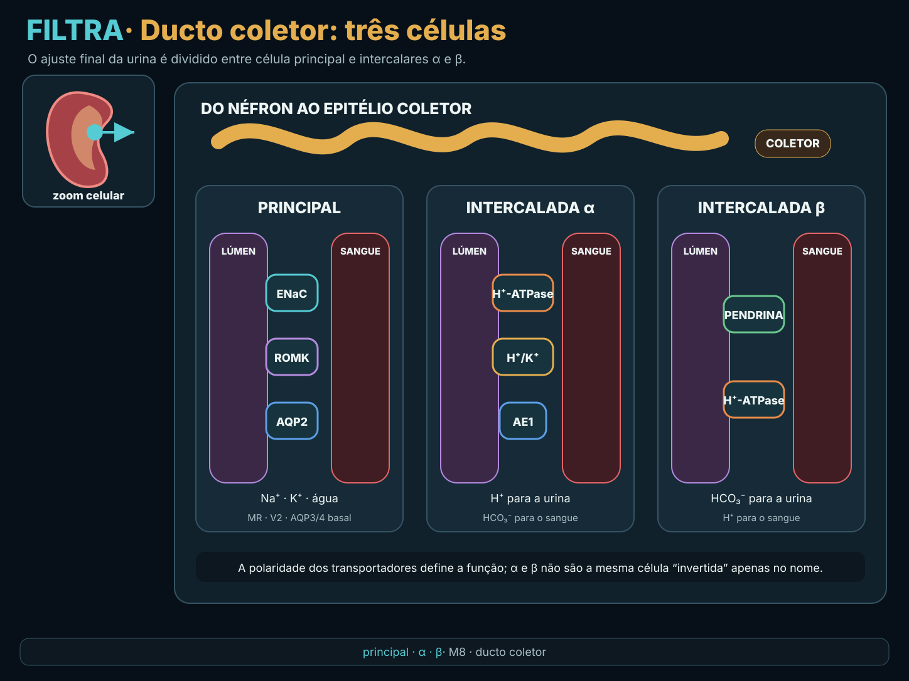
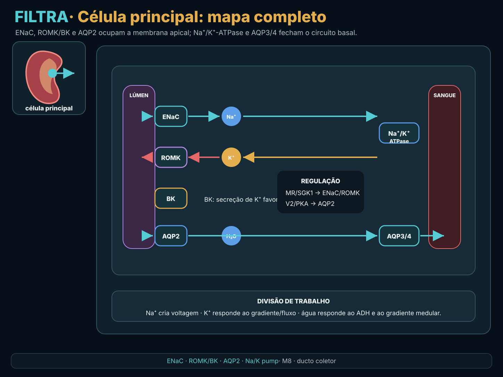
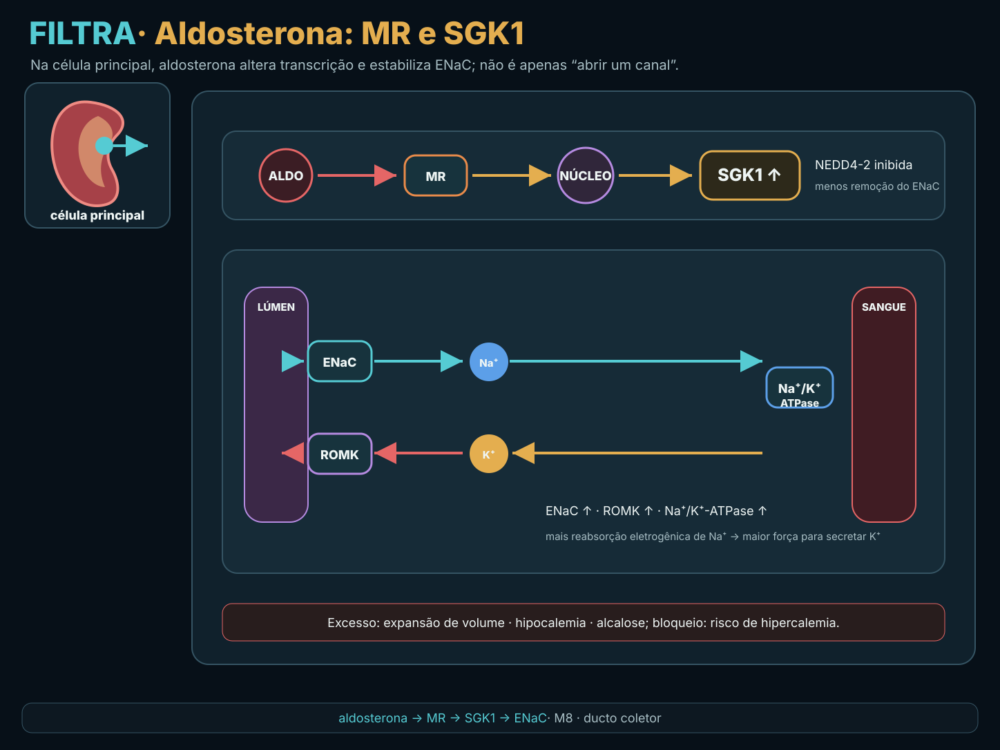
2. A balança Na↔K e o ácido-base
Reabsorver Na pelo ENaC deixa a luz negativa, o que secreta K⁺ — por isso quem aumenta o Na distal (alça, tiazídico) perde K. A intercalar α excreta H⁺ e gera novo HCO₃.
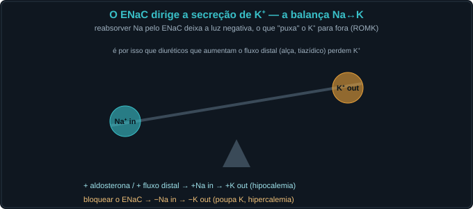
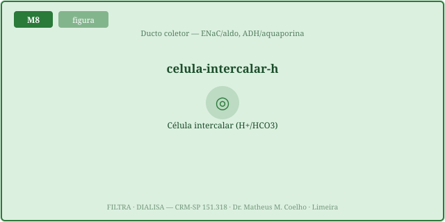
3. Os poupadores de K⁺ — duas chaves, mesmo fim
Reduzem o ENaC → menos K secretado → poupam K (risco de hipercalemia). ARM (espironolactona/eplerenona) bloqueiam o receptor; amilorida bloqueia o canal.

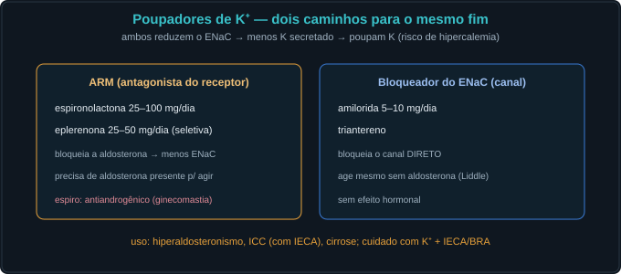
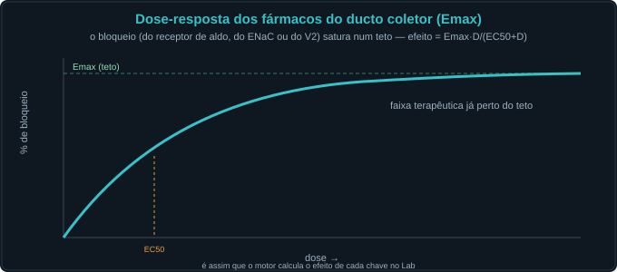
4. A segunda alavanca — ADH e a água
O ADH (V2) insere a aquaporina-2 → reabsorve água usando o gradiente medular (M6). É a alavanca da água, independente da aldosterona.
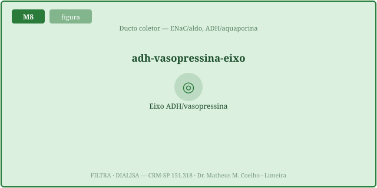
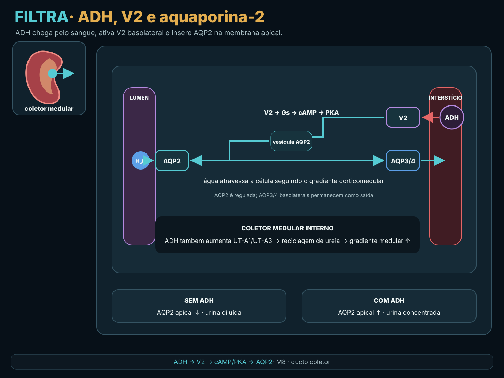
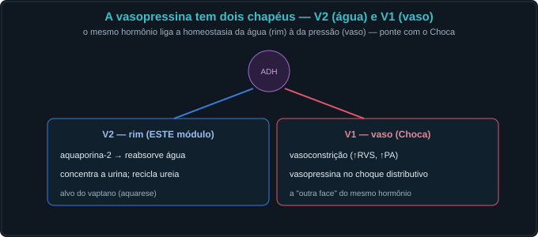
5. O vaptano e quando o ENaC é o problema
O vaptano (tolvaptan 15–60 mg) bloqueia o V2 → aquarese → sobe o Na (SIADH). E a genética do ENaC (Liddle × pseudo-hipoaldo) define o fármaco certo.
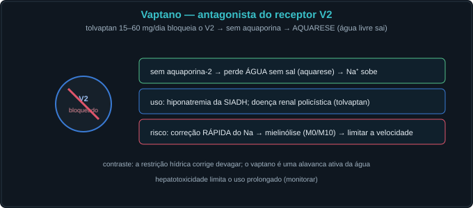
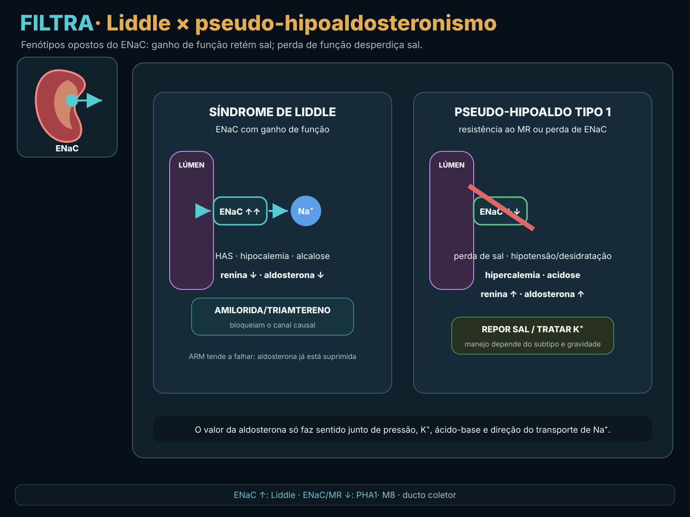
Caso — oito atos, decida antes de revelar
Mulher com ICC e cirrose; vamos ajustar volume e eletrólitos pelo ducto coletor.
Trilha socrática — treze perguntas que constroem o conceito
1. Quais as duas alavancas do ducto coletor?
A aldosterona coordena Na/K na principal e favorece H⁺ na intercalada α; o ADH regula água via V2/AQP2. São eixos distintos.
2. O que faz a aldosterona?
Na célula principal, MR/SGK1 aumenta ENaC, ROMK e Na⁺/K⁺-ATPase → reabsorve Na⁺ e secreta K⁺. A secreção de H⁺ ocorre na intercalada α.
3. Por que reabsorver Na secreta K?
O Na entrando pelo ENaC deixa a luz negativa, o que favorece a saída de K⁺ pelo ROMK. A balança Na↔K.
4. Por que diuréticos de alça/tiazídico causam hipocalemia?
Aumentam o Na entregue ao ducto → mais reabsorção pelo ENaC → mais K secretado.
5. Como os poupadores de K agem?
Reduzindo o ENaC: ARM bloqueiam o receptor de aldosterona; a amilorida bloqueia o canal direto. Menos K secretado → poupa K.
6. ARM × amilorida: a diferença prática?
O ARM precisa de aldosterona presente (e a espironolactona é antiandrogênica); a amilorida age sem aldosterona (útil no Liddle).
7. Qual o risco dos poupadores?
Hipercalemia — sobretudo com IECA/BRA, DRC ou suplemento de K.
8. O que as células intercalares fazem?
α excreta H⁺ (gera novo HCO₃, corrige acidose); β secreta HCO₃ (corrige alcalose). A aldo favorece a α.
9. O que o ADH faz no ducto?
Via V2, insere aquaporina-2 → reabsorve água pelo gradiente medular → concentra a urina.
10. O que é a SIADH?
ADH inapropriadamente alto → retém água → hiponatremia euvolêmica com urina concentrada.
11. Como o vaptano corrige a SIADH?
Bloqueia o V2 → aquarese (perde água livre sem sal) → o Na sobe. Cuidado com a velocidade (mielinólise).
12. Os dois receptores do ADH?
V2 (água, rim — aqui) e V1 (vasoconstrição — Choca). O mesmo hormônio, dois papéis.
13. Em que sentido isto é homeostasia?
O ducto faz o ajuste fino do K, do H⁺ e da água por hormônios — a última chance de corrigir o meio interno antes da urina final.
Instrumento — o potássio × a atividade do ENaC
Os controles do Lab alimentam esta curva. ENaC alto (aldo) → K baixo; ENaC bloqueado (poupador) → K alto. O marcador laranja é o ponto de operação.
Laboratório — as duas alavancas e seus fármacos (dose computada)
| Variável | Atual | Comentário |
|---|---|---|
| Atividade do ENaC | — | 1 = normal |
| K⁺ plasmático (mmol/L) | — | 3,5–5,0 |
| FENa (%) | — | ajuste fino |
| ADH efetivo | — | vaptano ↓ |
| Osmolalidade urinária (mOsm) | — | diluída = aquarese |
| Na⁺ plasmático (mmol/L) | — | SIADH ↓ · vaptano ↑ |
| Padrão | — | — |